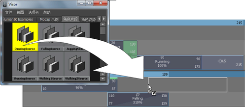

从“Trax 编辑器”(Trax Editor)打开“Visor”
- 执行以下操作之一：
- 在 Trax 菜单栏中，选择(File > Visor...)。
- 在Trax 工具栏中，单击“获取片段”(Get Clips) 。
“Visor”窗口将打开。
- 执行以下操作之一：
- 单击“角色片段”(Character Clips)或“角色姿势”(Character Poses)选项卡以显示已应用于场景中的角色的片段或姿势。
- 单击“未使用的片段”(Unused Clips)或“未使用的姿势”(Unused Poses)选项卡以显示未应用于场景中的角色的片段或姿势。
例如，如果从另一个场景导入一个片段，则可以通过“Visor”中的“未使用的片段”(Unused Clips)选项卡来访问该片段。
在“Visor”中复制源片段并将其粘贴到“Trax 编辑器”(Trax Editor)中的角色
- 打开 Visor，然后切换到“角色片段”(Character Clips)或“未使用的角色片段”(Unused Character Clips)选项卡。
- 执行以下操作之一：
- 在要复制的源片段上单击鼠标中键，并将它从“Visor”拖动到所需的角色、轨迹和位置上。
表示要插入的片段的白色框会显示在轨迹视图区域中的鼠标指针下。该白色框与要复制的源片段长度相同。
此外，如果鼠标指针放在轨迹之间，将出现一条黑线，表示将在轨迹之间创建一条新的轨迹，以容纳要复制的片段。有关将轨迹添加到角色、组或子角色的详细信息，请参见选择、添加和移除轨迹。
释放鼠标按钮之后，在白色框的位置（Trax 时间轴中的轨迹和点）将出现该源片段的一个实例。
- 在“Visor”中右键单击所需的源片段，从显示的菜单中选择“复制”(Copy)，然后在所需角色下方的“Trax”轨迹视图区域中单击鼠标右键并选择“粘贴片段”(Paste Clip)。
在轨迹中的角色下方，会显示选定源片段的一个实例。
如果将片段粘贴到相同角色集中的某一个角色上，Maya 将创建该片段的实例。请参见复制片段。
如果将片段粘贴到一个不同的角色集，并且在源片段的角色集与将片段拖动到的角色集之间存在角色贴图，那么 Maya 会使用该角色贴图粘贴该片段。请参见在角色之间映射动画。
否则，Maya 将使用“按节点名称”(By Node Name)粘贴方法来粘贴角色中的片段。如果要使用其他方法（例如“按属性名称”(By Attribute Name)）粘贴，请在“粘贴片段选项”(Paste Clip Options)窗口（(Edit > Paste) >
 ）中选择所需的方法。
）中选择所需的方法。
- 在要复制的源片段上单击鼠标中键，并将它从“Visor”拖动到所需的角色、轨迹和位置上。
将片段从磁盘导入到“Visor”中
- 在“Visor”中，选择(File > Import)。
此时将显示“导入”(Import)文件浏览器。
- 导航到包含要导入到“Visor”中的一个或多个片段的 .ma 或 .mb 文件，选择文件，然后单击“导入”(Import)。
这些片段会显示在“Visor”的“未使用的片段”(Unused Clips)选项卡中。
将片段从“Visor”导出到磁盘
- 在“Visor”中，选择(File > Export Selected Network)，或在某个片段或某组选定片段上单击鼠标右键并从显示的弹出菜单中选择“导出”(Export)。
此时将显示“导出”(Export)文件浏览器。
- 导航到要将片段导出到的磁盘上的文件夹，然后单击“导出”(Export)。
在“Visor”中选择的片段将放置在 .ma 或 .mb 文件中，并导出到磁盘上指定的目录和文件夹中。
将片段从磁盘复制到场景
- 有关将片段从操作系统的文件浏览器复制到 Maya 场景的信息，请参见剪切、复制和粘贴片段。